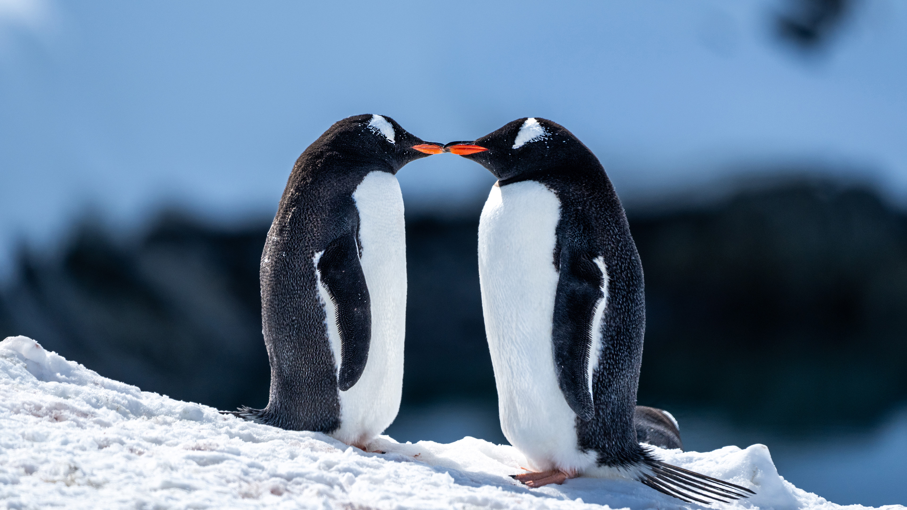

Penguins are the fastest swimming birds and extremely dependent upon relationships because without one another, they die.

Penguins have roamed the earth for about 60 million years. Some species dive around 800 below the surface of the ocean to find food.
Built by Chris Niblock · BMIS 235